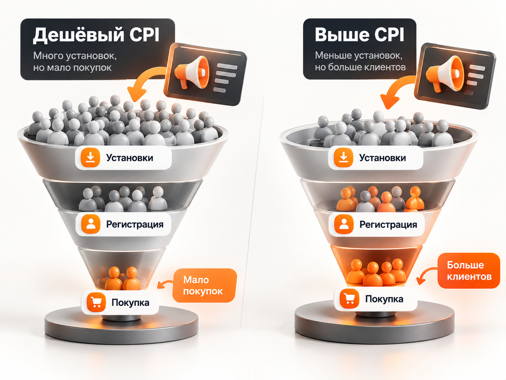

Блог о платном трафике
Как продвигать приложение через Яндекс Директ
Продвижение приложения через Яндекс Директ стоит строить не вокруг самой установки, а вокруг всей цепочки: реклама -> установка -> первый запуск -> регистрация -> полезное действие -> покупка или подписка.
Установки нужны как первый этап. Но если одна кампания приводит пользователя за 100 рублей, а другая за 200 рублей, это ещё не означает, что первая работает лучше. Во второй кампании пользователи могут чаще регистрироваться, покупать и оставаться в приложении.
Поэтому перед запуском рекламы нужно решить три задачи: настроить передачу событий из приложения, выбрать правильную цель для алгоритма и определить допустимую стоимость пользователя исходя из экономики продукта.
Мобильное приложение и веб-приложение - разные сценарии
Если приложение устанавливается из App Store, Google Play или RuStore, речь идёт о классическом продвижении мобильного приложения. Директ умеет рекламировать приложения для iOS и Android, получать от трекера данные об установках и событиях внутри приложения и использовать их для оптимизации. Сейчас поддерживаются App Store, Google Play и RuStore.
Если продукт работает прямо в браузере, например SaaS, онлайн-сервис или другое web-приложение, специальная кампания на установки обычно не нужна. Используется обычная Единая перфоманс-кампания, Яндекс Метрика и цели:
- регистрация;
- создание проекта;
- завершение onboarding;
- активация пробного периода;
- оплата;
- продление подписки.
Для PWA (прогрессивного веб-приложения, которое работает в браузере, но может устанавливаться на устройство как обычное приложение) ситуация промежуточная. Такое приложение действительно можно установить на устройство, но поддержка установки и способов её отслеживания различается между браузерами. Событие appinstalled позволяет зафиксировать успешную установку в поддерживаемых браузерах, но оно доступно не везде. Поэтому для PWA я бы не делал установку единственным KPI и обязательно учитывал регистрацию, активацию и оплату.
Есть и третий сценарий - у бизнеса одновременно есть сайт и мобильное приложение. Для этого в Директе существует Web+App: кампания может использовать конверсии сайта и приложения одновременно, а пользователя после клика вести на подходящую платформу.
Что происходило с рекламой приложений в 2025-2026 годах
Рынок продолжает расти. По данным Яндекса, в 2025 году мобильная аудитория продвижения приложений выросла на 45% год к году, а инвестиции рекламодателей - на 31%. Ежемесячная мобильная аудитория превышала 164 млн пользователей.
Отдельно выросло значение RuStore. В 2025 году его месячная аудитория достигала 68 млн пользователей, а число скачиваний приложений превысило 450 млн. RuStore также сообщал о росте аудитории примерно на 30% год к году.
Сам Яндекс за последний год существенно расширил возможности app-рекламы. Появились продвижение приложений из RuStore, товарные объявления для приложений, A/B-эксперименты, новые возможности ретаргетинга и показы на Connected TV и десктопах.
Причём новые устройства уже можно рассматривать не только как охватный эксперимент. По данным Яндекса за 2026 год, медианный CPI в кросс-платформенных кампаниях составлял 139 рублей на Connected TV и 52 рубля на десктопах. В кейсе ВкусВилла такой подход дал на 10% больше конверсий в Директе и снизил CAC на 48% относительно других кампаний продвижения приложения. Это результаты конкретных размещений, а не универсальный норматив для рынка.
Как сейчас запускается продвижение приложения
Основной инструмент для специалиста - Единая перфоманс-кампания.
На момент подготовки статьи Яндекс уже объявил, что с 29 сентября 2026 года новые кампании продвижения приложений через Мастер кампаний создавать будет нельзя. Новые запуски переходят в ЕПК.
Внутри кампании нужно определить, кого мы хотим получить:
- новых пользователей;
- существующих пользователей через ретаргетинг.
Для привлечения новой аудитории можно оптимизироваться на установку или событие после установки. Для существующих пользователей доступны сценарии возврата в приложение, завершения покупки, повторного заказа или перехода на следующий этап воронки.
Как правильно настроить аналитику приложения
Без мобильного трекера нормальная оптимизация рекламы практически невозможна.
Принцип выглядит так:
реклама -> трекинговая ссылка -> магазин приложений -> установка -> запуск -> события внутри приложения -> данные возвращаются в Директ.
В качестве трекера можно использовать AppMetrica, AppsFlyer, Adjust и другие совместимые решения. Трекер сопоставляет установку с рекламным переходом и передаёт информацию обратно в Директ.
В AppMetrica можно собирать не только установки, но и события, покупки, выручку, источники привлечения и поведение когорт пользователей.
Минимальный набор событий я бы строил примерно так:
install -> first_open -> registration -> activation -> purchase
Для подписного сервиса вместо покупки можно передавать начало пробного периода, оформление подписки и её продление. Для интернет-магазина - просмотр товара, корзину, заказ и оплату.
Чем ближе событие к деньгам, тем ценнее оно для бизнеса. Но чем глубже событие расположено в воронке, тем меньше данных получает алгоритм.
На какую цель оптимизировать Директ
Главная ошибка - сразу выбрать самое ценное, но очень редкое событие.
Предположим, приложение получает 100 установок в неделю, но только пять покупок. Если оптимизировать кампанию сразу на покупку, алгоритму может не хватить данных.
Яндекс рекомендует стремиться как минимум к 70 конверсиям в неделю. Если выбранная цель набирает меньше, имеет смысл подняться выше по воронке и использовать более частое событие.
Поэтому последовательность может выглядеть так:
установка -> регистрация -> активация -> покупка.
На старте кампания обучается на установках. После появления достаточного количества регистраций можно перейти на регистрацию. Когда покупок становится достаточно - оптимизироваться уже на них.
Это лучше, чем держать кампанию на дешёвых установках бесконечно. Задача рекламы всё-таки не в том, чтобы наполнить приложение пользователями, которые его больше никогда не откроют.
Android и iOS отличаются
Для Android в Директе можно использовать модель с оплатой непосредственно за установки. Для iOS такая модель недоступна, поэтому используется оптимизация на конверсии с оплатой за клики.
Для iOS также нужно учитывать SKAdNetwork. В Директе установки, атрибуцированные через SKAdNetwork, отображаются отдельно, а агрегированные данные могут поступать с задержкой до 48 часов.
Из-за этого Android и iOS лучше анализировать отдельно. У них различаются механика атрибуции, стоимость и качество аудитории.
Поиск или РСЯ для продвижения приложения
Поиск работает там, где уже существует сформированный спрос.
Например:
приложение для учета расходовприложение для изучения английскогоприложение для бронирования отелейтрекер питанияприложение доставка продуктов
Человек уже понимает, что ему нужно, поэтому поисковый трафик часто получается более горячим. Но количество таких пользователей ограничено спросом.
РСЯ позволяет выйти за пределы прямых запросов и находить людей по поведению, интересам и другим сигналам. Масштаб здесь значительно выше, но возрастает роль креативов и алгоритмов.
В свежем материале Rocket10 приводится пример приложения сервиса услуг. После работы с сегментами платежеспособности стоимость регистрации снизилась с 734 до 693 рублей, а Retention на третий день вырос с 18 до 21%. То есть оптимизация изменила не только цену конверсии, но и качество привлечённых пользователей.
Подробнее о различиях этих каналов есть в статье «Поиск или РСЯ в Яндекс Директе».
Креативы для приложений
На поиске основной акцент делается на соответствие запросу и конкретную пользу приложения.
В РСЯ пользователь ничего специально не ищет, поэтому объявление должно сначала объяснить, зачем ему вообще нужен продукт.
Показывать только логотип и фразу «Скачайте наше приложение» обычно недостаточно.
Лучше демонстрировать конкретный сценарий:
- «Запишите все расходы за минуту»;
- «Сравните цены 800 брендов»;
- «Забронируйте отель без звонков»;
- «Получите результат анализа прямо в приложении».
Сам интерфейс тоже может быть частью рекламного сообщения. Пользователь заранее видит, каким будет продукт после установки.
Для e-commerce-приложений интересны товарные объявления. В опубликованном тесте Rocket10 товарные объявления дали более высокий CPI, но конверсия в покупку оказалась на 2 процентных пункта выше, а средний чек вырос на 35%. Это хороший пример того, почему нельзя автоматически считать самый дешёвый CPI лучшим результатом.
Сколько может стоить продвижение приложения
Универсального среднего CPI для Яндекс Директа нет.
Сам Яндекс отдельно подчёркивает, что оптимальная стоимость установки зависит от тематики, аудитории и конкуренции, поэтому одну цифру нельзя использовать как норматив для всех приложений.
Свежие публичные кейсы показывают, насколько результаты могут различаться.
В кейсе сервиса медицинских консультаций за 2025 год получили 3062 установки за первый месяц. CPI составил 67 рублей на поиске и 33 рубля в сетях, итоговый показатель сообщается на уровне 59 рублей. Это хороший результат конкретного продукта и рекламной кампании, а не ориентир для любого приложения.
В другом свежем кейсе fashion-маркетплейса получили более 11 900 установок. После накопления данных объём установок вырос примерно в десять раз, а CPI снизился на 34%. При этом команда сознательно временно допустила рост CPI, чтобы алгоритм начал находить более дорогих, но покупающих пользователей.
Поэтому прогнозировать рекламу лучше от экономики конкретного продукта.
Как рассчитать допустимый CPI
Сначала определяем, сколько бизнес может платить за клиента.
Допустимый CPI = допустимый CAC × конверсия установки в клиента.
Например, бизнес может платить 2000 рублей за нового платящего пользователя.
Если из установки в оплату конвертируются 10% пользователей:
2000 × 10% = 200 рублей
Допустимый CPI - 200 рублей.
Если в оплату конвертируется только 5% пользователей:
2000 × 5% = 100 рублей
При той же экономике допустимый CPI уже в два раза ниже.
Именно поэтому два приложения из одной категории могут иметь совершенно разные допустимые цены установки.
Как спрогнозировать рекламный бюджет
Для app-кампаний Яндекс рекомендует рассчитывать бюджет относительно стоимости целевого действия.
Минимальный недельный бюджет:
70 × CPI или CPA
Оптимальный недельный бюджет:
350 × CPI или CPA
Это не означает, что без оптимального бюджета реклама обязательно не заработает. Значение показывает объём данных, на котором алгоритму значительно проще обучаться.
Расчётные примеры:
| Целевая цена | Минимум в неделю | Оптимум в неделю |
|---|---|---|
| 100 ₽ | 7 000 ₽ | 35 000 ₽ |
| 200 ₽ | 14 000 ₽ | 70 000 ₽ |
| 300 ₽ | 21 000 ₽ | 105 000 ₽ |
| 500 ₽ | 35 000 ₽ | 175 000 ₽ |
Это именно расчёт по рекомендации Яндекса, а не прогноз средней стоимости установки.
Если реальный CPI приложения составляет 200 рублей, то бюджет 20 000 рублей позволит получить примерно 100 установок:
20 000 / 200 = 100 установок
При 100 000 рублей:
100 000 / 200 = 500 установок
При 200 000 рублей:
200 000 / 200 = 1000 установок
Но фактическая цена установки заранее неизвестна. До запуска её лучше оценивать по прогнозам самого Директа, данным предыдущих кампаний и экономике продукта.
Подробнее общую методику расчёта можно посмотреть в материале «Прогноз бюджета Яндекс Директ».
Не останавливайтесь на CPI
После получения первых данных я бы строил отчёт минимум по такой цепочке:
расход -> установки -> CPI -> регистрации -> CPA регистрации -> покупки -> CAC -> выручка
Дополнительно для подписных и регулярно используемых приложений нужны показатели удержания:
D1 -> D7 -> D30
Кампания с CPI 100 рублей и плохим удержанием может быть значительно хуже кампании с CPI 200 рублей, пользователи которой остаются в продукте и платят.
Если передавать в аналитику доход, рекламу можно оценивать уже по ROAS, ДРР и LTV, а не только по стоимости установки.

Логика та же, что и в обычной сквозной аналитике Яндекс Директ: рекламный кабинет должен видеть не просто первое действие, а максимально близкий к деньгам результат.
Если есть и сайт, и приложение
Не всегда правильно разделять web и app на два независимых мира.
В сценарии Web+App Директ может учитывать события обоих продуктов в одной кампании. Пользователь без приложения может перейти на сайт или в магазин, а пользователь с установленным приложением - сразу в нужный раздел приложения через универсальную или трекинговую ссылку.
Такой вариант особенно интересен интернет-магазинам, сервисам бронирования, доставке и другим проектам, где одна и та же покупка может происходить как на сайте, так и внутри приложения.
Что ещё использовать кроме Яндекс Директа
Для Android-приложений я бы отдельно рассматривал RuStore.
Внутри самого магазина доступны рекламные размещения, поиск, рекомендации, фичеринг и эксперименты с карточкой приложения. Через VK Рекламу можно продвигать приложение как внутри RuStore, так и на других площадках VK.
Ещё один вариант внутри экосистемы Яндекса - ПромоСтраницы. Они позволяют сначала подробно объяснить продукт, а затем отправить пользователя в приложение и оптимизировать размещение на мобильные события. Это особенно интересно продуктам, которым сложно продать установку одним коротким объявлением.
Не стоит забывать и про ASO. Карточка приложения является частью рекламной воронки. Даже качественный трафик будет плохо конвертироваться в установку, если пользователь видит непонятное описание, слабые скриншоты, плохой рейтинг или давно не обновлявшееся приложение.
Дополнительными источниками могут быть блогеры, тематические сообщества, контент, собственный сайт, email-база и реферальная программа. Для платных каналов желательно использовать трекинговые ссылки, чтобы установки и последующие события не превращались в «непонятную органику».
Как оптимизировать рекламу после запуска
Первые решения лучше принимать не по общей статистике кампании, а по отдельным срезам.
Стоит сравнивать:
- Android и iOS;
- поиск и РСЯ;
- регионы;
- аудитории;
- производителей устройств;
- объявления и креативы;
- CPI;
- CPA регистрации;
- CAC;
- удержание;
- выручку и ROAS.
В ЕПК для приложений доступны корректировки по производителю устройства и версии операционной системы. В некоторых приложениях разница между владельцами разных устройств действительно оказывается существенной.
Статистику кампаний удобно анализировать через Мастер отчётов Яндекс Директ.
Типичные ошибки при продвижении приложения
- Запустить рекламу до настройки трекера. В итоге появляются клики и расходы, но невозможно нормально понять, какие объявления принесли установки, регистрации и продажи.
- Считать установку конечным результатом. Особенно опасно автоматически масштабировать источник только потому, что у него самый низкий CPI.
- Сразу оптимизироваться на слишком редкую покупку или подписку. Если событий мало, алгоритму просто не хватает данных.
- Раздробить небольшой объём конверсий между множеством кампаний, аудиторий и целей. Каждая отдельная кампания начинает обучаться на слишком маленькой выборке.
- Постоянно менять бюджет, стратегию и цели. Алгоритму требуется время на адаптацию. В материалах по продвижению приложений Яндекс рекомендует не ограничивать расписание без необходимости и давать стратегии достаточно данных.
- Не работать с карточкой приложения. Реклама может привести человека в магазин, но установить приложение он решает уже там.
Пошаговый план запуска
- Определить конечную бизнес-цель: покупка, подписка, платная регистрация или другое действие.
- Посчитать допустимый CAC.
- Настроить AppMetrica или другой мобильный трекер.
- Передавать установки, регистрации, ключевые действия и выручку.
- Настроить диплинки и отложенные диплинки.
- Добавить приложение в библиотеку Директа.
- Разделить iOS и Android.
- Создать ЕПК на привлечение новых пользователей.
- На старте выбрать достаточно частую цель для обучения.
- Запустить поиск и РСЯ и накопить статистику.
- Сравнивать не только CPI, но и CPA регистрации, CAC и удержание.
- После накопления данных переходить на более глубокую цель.
- Масштабировать сегменты, которые дают не просто установки, а качественных пользователей.
- Дополнительно тестировать Web+App, RuStore, VK Рекламу, ПромоСтраницы и другие подходящие каналы.
Главный принцип здесь простой: реклама приложения должна оптимизироваться не на максимальное количество скачиваний, а на максимальное количество пользователей, которые действительно приносят продукту ценность.